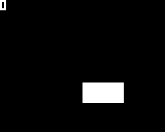

Les constantes
Étape 2
Comme pour le Pong, il vaut mieux attaquer le jeu en créant une première version qui contient un strict minimum (sa structure) , puis se baser dessus pour ajouter le reste. Nous ajouterons les variables que nous avons déjà introduit dans les ateliers précédents puis utiliserons un nouveau type de stockage en mémoire: les constantes
Pour le jeu de Pong, nous avions d'abord créé un jeu avec une raquette et une balle. Une fois que c'était fini, vous aviez ajouté une deuxième raquette et un score. Comme pour le Pong, il vaut mieux attaquer le jeu en créant une première version qui contient le strict minimum, puis se baser dessus pour faire le reste.
Ici, nous allons donc commencer par créer une variante plus simple. La séquence ne s'affichera pas, c'est-à-dire que nous avons juste à gérer un seul bloc, comme ceci :

Si le rectangle est sur la gauche, et que le joueur appuie sur la flèche de gauche, il gagne des points et un nouveau rectangle apparait. La logique est analogue si le rectangle est à droite. Si jamais il se trompe, son score est remis à zéro. Et enfin, pour mettre un peu de pression, le score diminue progressivement
Ecrivons la structure de notre programme
Le jeu doit donc avoir une manière de savoir où est le rectangle (que l'on appellera brique dorénavant), et voir si le joueur a appuyé sur la bonne flèche. Il faut d'abord déclarer toutes ces variables en les ajoutant à la structure que nous avions à la fin de l'étape précédente:
#include <Gamebuino-Meta.h>
int brique; // Position de la brique. Si elle vaut 1, la brique est à gauche. Si elle vaut 2, la brique est à droite
int fleche; // 1 flèche de gauche, 2 flèche de droite, 0 pas de flèches (en attente du joueur)
int score = 0;
void setup() {
gb.begin();
brique = random(1, 3); // 50% gauche, 50% droite
fleche = 0;
}
void loop() {
while(!gb.update());
// ENTREES //
// MISE A JOUR //
// AFFICHAGE //
gb.display.clear();
}
Ici, nous avons juste déclaré les trois variables qu'il nous faut:
-
briquequi est une variable de type entier valant soit 1, soit 2. S'il vaut 1, alors on considère que la brique est à droite. Autrement, s'il vaut 2 alors on considère que la brique est à gauche. -
flecheest aussi un entier et, similairement àbrique, s'il vaut 1, on dira que la flèche gauche est appuyée par le joueur. Siflechevaut 2, cela correspond à la flèche de droite. Et enfin si aucune flèche n'est appuyée, notre variable vaudra 0. -
scoreest aussi un entier qui nous servira à stocker le score obtenu.
Les Constantes
Pouah ! Ce n'est pas très facile à ingérer tout ça... Se rappeler que 1 correspond à gauche, que 2 correspond à la droite, ... et là, nous avons que 2 directions à prendre en compte ! Comment faire pour que ce soit lisible sans trop se creuser la tête ? Avec des constantes évidement !
Une constante est comme une variable, sauf qu'elle ne peut pas changer de valeur au cours du programme (d'où le nom). Une constante est simplement un nom qu'on donne à une valeur et c'est très utile dans les situations comme la nôtre : quand on utilise des valeurs arbitraires. Ici on utilise 1 pour designer la gauche, mais on aurait aussi pu utiliser -382 à la place. Sans utiliser de constantes on écrirait brique = 1; pour dire "la brique est à gauche". Mais avec une constante on peut écrire brique = GAUCHE; ! Bien mieux non ? Même plus besoin de commentaires pour expliquer ce que fait cette instruction !
Alors, comment créons-nous des constantes ? Pour déclarer une constante, on fait comme pour une variable en ajoutant le mot clé const avant de déclarer le type :
const int GAUCHE = 1;
Contrairement aux variables, il est obligatoire d'affecter une valeur aux constantes lors de leurs déclarations. Simplement parce qu'après leur déclaration, leur valeur ne pourra plus changer.
#include <Gamebuino-Meta.h>
// Constantes
const int GAUCHE = 1;
const int DROITE = 2;
const int SANS_DIRECTION = 3;
int brique; // Position de la brique. Soit GAUCHE, soit DROITE
int fleche; // Correspond à la flèche appuyé par l'utilisateur. Soit GAUCHE, soit DROITE, soit SANS_DIRECTION
int score = 0;
void setup() {
gb.begin();
brique = random(GAUCHE, DROITE + 1); // +1 parce-que le deuxième paramètre n'est pas dans l'intervalle : random(1, 3) => 1 ou 2 (pas 3)
fleche = SANS_DIRECTION;
}
void loop() {
// loop...
}
Et voilà, nous avons déclaré quelques constantes très utiles :D La brique est soit à gauche, soit à droite. La variable fleche est, elle, à gauche, à droite, ou sans direction. Bien plus compréhensible n'est-ce pas ?
Si vous lisez le code d'un jeu créé par quelqu'un d'autre, il est possible qu'il n'utilise pas la structure que l'on vient de voir pour déclarer ses constantes. Certains utilisent
#define GAUCHE 1. Ceci revient quasiment à faireconst int GAUCHE = 1;. Les différences ne sont pas importantes à notre niveau mais nous vous conseillons d'utiliserconstqui est permet plus facilement de localiser les bugs éventuels lorsque vous obtenez une erreur de compilation. Nous utiliserons exclusivement desconstdans nos ateliers.
On peut ensuite facilement implémenter la gestion des entrées et faire l'affichage comme ceci :
#include <Gamebuino-Meta.h>
// Constantes
const int GAUCHE = 1;
const int DROITE = 2;
const int SANS_DIRECTION = 3;
int brique; // Position de la brique. Soit GAUCHE, soit DROITE
int fleche = SANS_DIRECTION; // Correspond à la flèche appuyé par l'utilisateur. Soit GAUCHE, soit DROITE, soit SANS_DIRECTION
int score = 0;
void setup() {
gb.begin();
brique = random(GAUCHE, DROITE + 1); // +1 parce-que le deuxième paramètre n'est pas dans l'intervalle : random(1, 3) => 1 ou 2 (pas 3)
fleche = SANS_DIRECTION;
}
void loop() {
while(!gb.update());
// ENTREES //
if (gb.buttons.released(BUTTON_LEFT)) {
fleche = GAUCHE;
}
else if (gb.buttons.released(BUTTON_RIGHT)) {
fleche = DROITE;
}
// MISE A JOUR //
// AFFICHAGE //
gb.display.clear();
if (brique == GAUCHE) {
gb.display.fillRect(20, 40, 20, 10);
}
else { // DROITE
gb.display.fillRect(40, 40, 20, 10);
}
// Score
gb.display.print(score);
}
Notre version simplifiée du jeu est presque finie, il nous reste juste à ajouter la logique de jeu.
Petit rappel de ce que nous voulons faire :
- Si le joueur n'a pas appuyé sur une flèche, ne rien faire
- Sinon, si la flèche en question correspond au côté de la brique, ajouter 15 points au score et créer une nouvelle brique.
- Sinon, remettre le score à zéro
Ici nous avons donc trois possibilités à chaque image, mais la première condition nous dit de ne rien faire si elle est vraie. On peut la modifier un peu pour obtenir :
- Si le joueur a appuyé sur une flèche :
- Si la flèche en question correspond au côté de la brique, ajouter 15 points au score et créer une nouvelle brique.
- Sinon, remettre le score à zéro
Ce qui nous donne le code suivant :
#include <Gamebuino-Meta.h>
// Constantes //
// Mettre ici les déclarations des constantes et des variables //
void setup() {
// Mettre ici le contenu de la procédure setup //
}
void loop() {
// ENTREES //
// ...
// MISE A JOUR //
// Doucement baisser le score
if (score > 0) {
score -= 1;
}
// Est-ce que le joueur a appuyé sur une flèche ?
if (fleche != SANS_DIRECTION) {
if (brique == fleche) { // Bonne flèche
score += 15;
brique = random(GAUCHE, DROITE + 1);
}
else {
// Perdu :(
score = 0;
}
fleche = SANS_DIRECTION; // L'entrée utilisateur a été prise en compte
}
// AFFICHAGE //
// ...
}
J'ai aussi ajouté un système qui diminue progressivement le score :score -= 1;. L'opérateur x -= y est un raccourci de x = x - y. Ce raccourci existe pour presque tous les opérateurs et est très pratique :
-
+= -
-= -
*= -
/= - et d'autres encore...
Je l'utilise aussi pour augmenter le score lorsque le joueur appuie sur la bonne flèche : score += 15;. A la fin du premier bloc if, ne pas oublier de réinitialiser fleche, sinon la Gamebuino pensera que le joueur est constamment en train d'appuyer sur une flèche !
Notre petit jeu est fini ! Vous pouvez le téléverser (si vous ne l'avez toujours pas fait) et y jouer avant de passer à la suite.